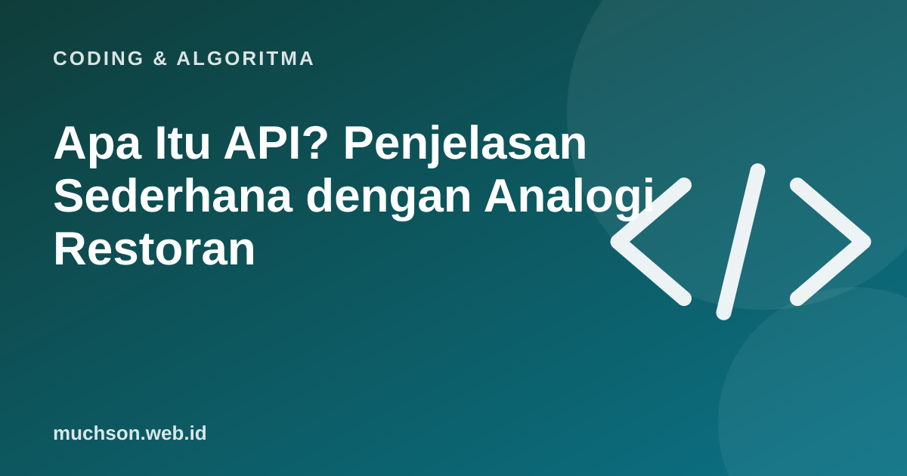

Beranda › Artikel › Coding & Algoritma
Coding & AlgoritmaApa Itu API? Penjelasan Sederhana dengan Analogi Restoran
Saat aplikasi cuaca menampilkan suhu di ponsel Anda, ia tidak mengukurnya sendiri. Ia bertanya ke layanan lain lewat API. Memahami API membuka pintu untuk menghubungkan hampir semua layanan digital.

Analogi restoran
API (Application Programming Interface) adalah "menu" yang menjelaskan apa yang bisa diminta dari sebuah layanan dan dalam format apa jawabannya. Pada web, biasanya Anda mengirim request ke sebuah alamat (URL), lalu menerima response berupa data, sering dalam format JSON.
Contoh request dan response
GET https://api.contoh.id/cuaca?kota=Malang
→ 200 OK
{
"kota": "Malang",
"suhu": 24,
"kondisi": "berawan"
}Contoh Python
import requests
r = requests.get("https://api.contoh.id/cuaca", params={"kota": "Malang"})
if r.status_code == 200:
data = r.json()
print(data["suhu"])
else:
print("Gagal:", r.status_code)Keamanan
API key dan token adalah rahasia. Simpan di variabel lingkungan atau layanan penyimpanan rahasia, bukan di dalam kode yang diunggah ke GitHub.
Tanya jawab
Apa bedanya API dan database?
Database menyimpan data. API adalah pintu terkontrol untuk meminta atau mengubah data itu.
Apa itu REST?
Gaya perancangan API web yang memakai URL sebagai sumber daya dan metode HTTP (GET, POST, dll.) sebagai tindakan.
Apakah semua API gratis?
Banyak yang gratis dengan batas pemakaian, banyak yang berbayar. Periksa syarat dan batasnya.